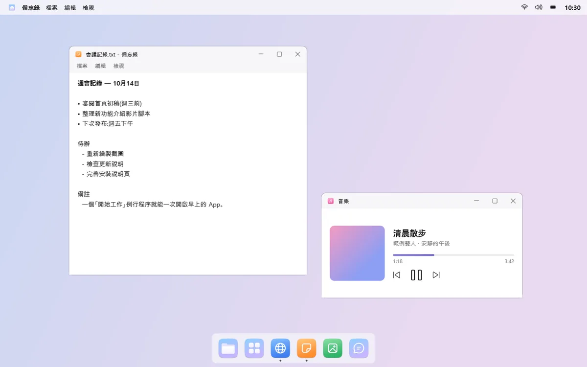
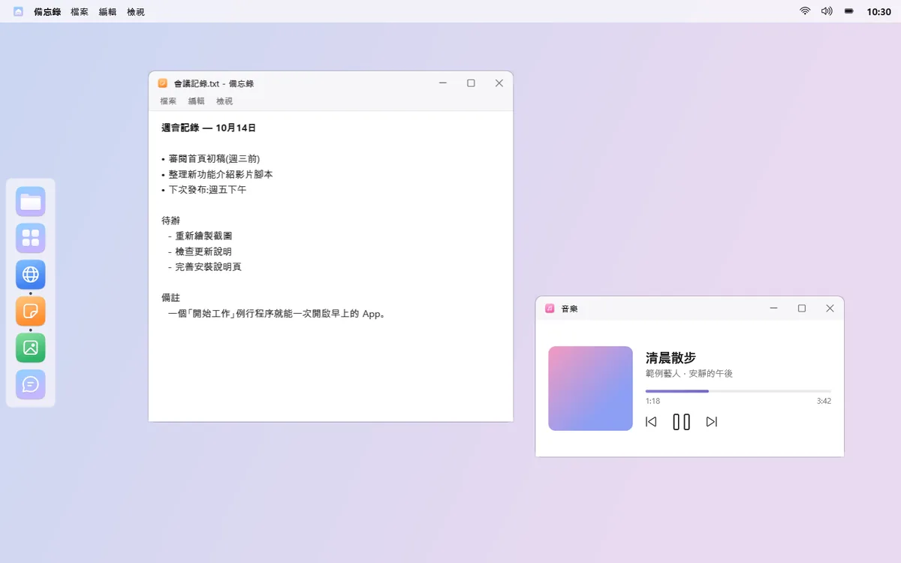
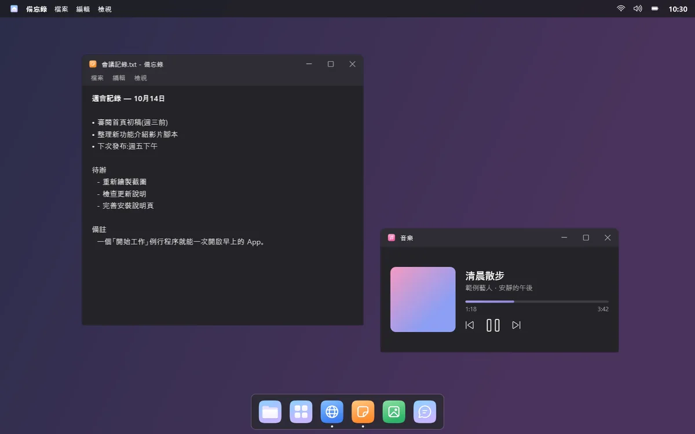
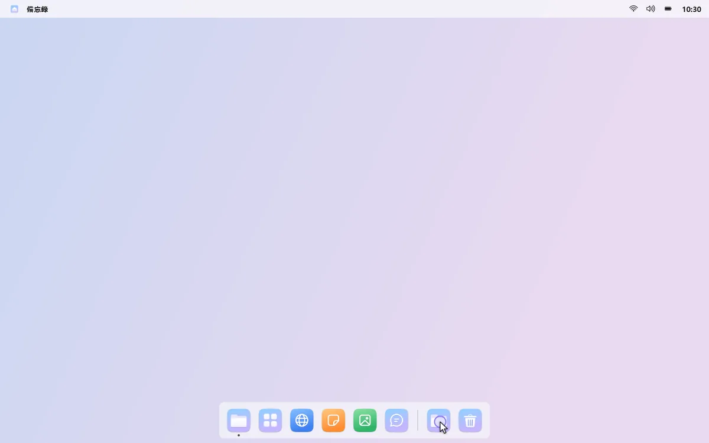
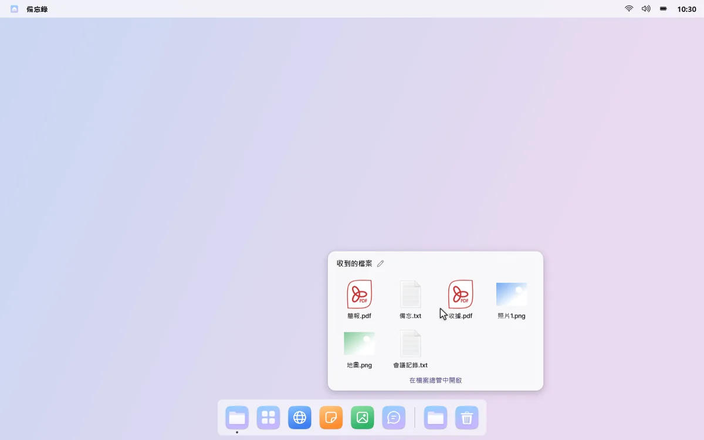
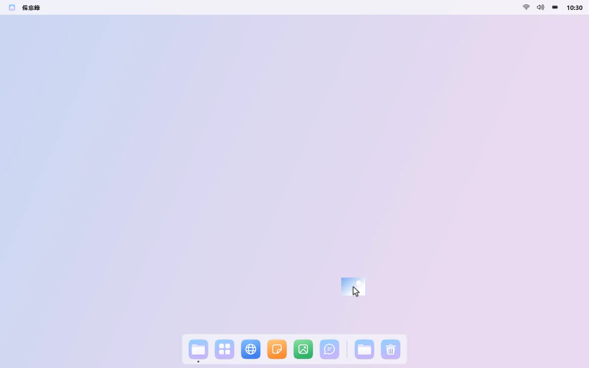
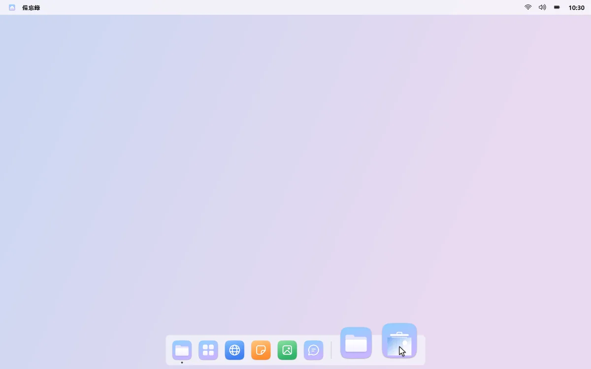
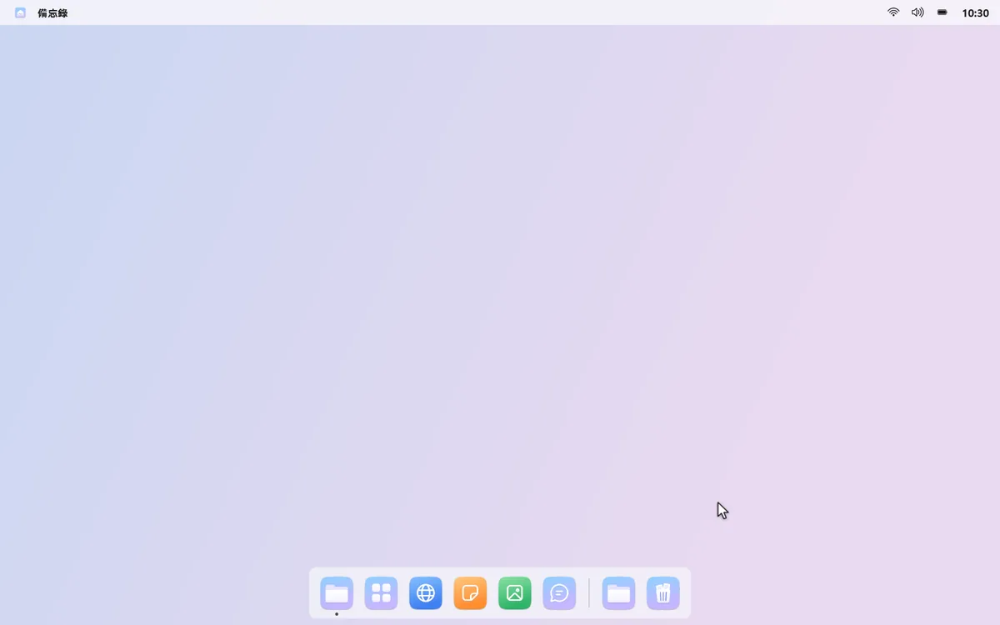
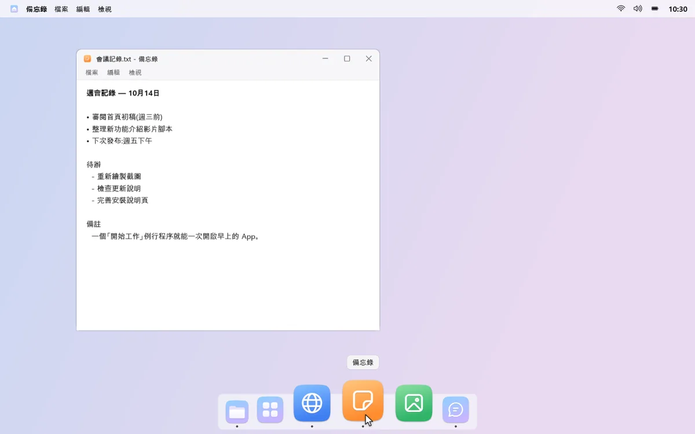
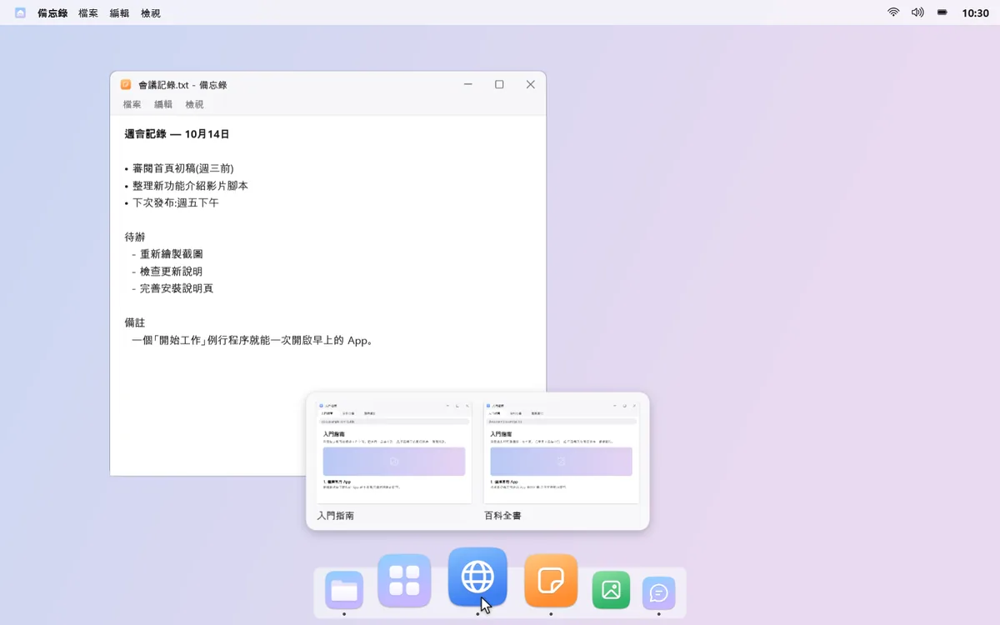

Dock、資料夾與資源回收筒
讓下方更清爽、更整齊
用只放 App、資料夾和資源回收筒的 Dock 取代工作列。平時隱藏，把滑鼠移到畫面邊緣才會出現。
01
位置和樣子，由你決定
Dock 可以放在下方、左側、右側或上方。拖曳圖示調整順序，也能選擇淺色或深色主題，以及滑鼠停留時圖示的放大效果。



02
下載資料夾，一按就開
把資料夾放進 Dock，按一下就能以格狀檢視裡面最新的檔案。有新檔案時，會出現一個小圓點。



03
資源回收筒，就在手邊
把檔案拖曳到 Dock 的資源回收筒即可刪除。按一下回收筒查看最近刪除的檔案，按右鍵即可還原。


04
用即時預覽挑選視窗
按一下有多個視窗的 App，從即時預覽中選出想要的那一個。如果它在另一個桌面上，mongdock 會帶你過去。也可以讓 Dock 只顯示目前桌面的 App。

